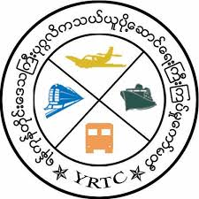
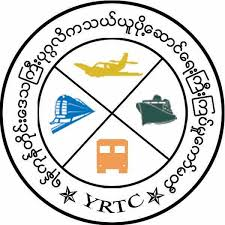
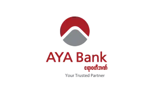
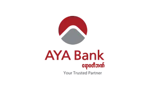

To provide advanced intelligent systems and operation to the public transportation industry of Myanmar.
To provide advanced intelligent systems and operation to the public transportation industry of Myanmar,
and the assist all the public transport carriers in providing
safe,efficient and comfortable services to the common Myanmar people.
Our company was signed YPS Master Agreement at Yangon Region Government Office ,
Hall on March 12 ,2019.
We are given GPS base bus control management system service to become more reliable,
safe and comfortable Bus Transportation.
ASTI CCTV service will promote safe and smart transportation in Yangon.
Yangon bus media can display bus stop,
next bus stop and entertainment for passenger who commuting in Yangon.
 

 

Years Experience
Happy Clients
Projects Completed
Client Satisfaction